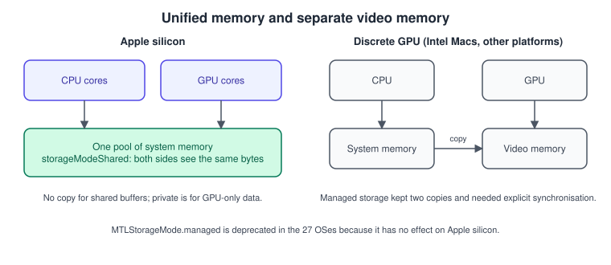
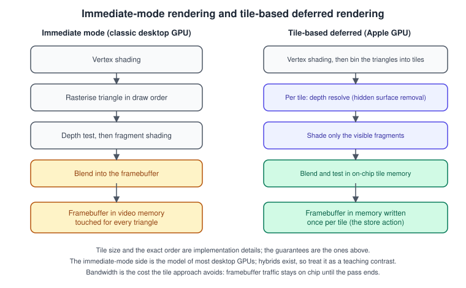
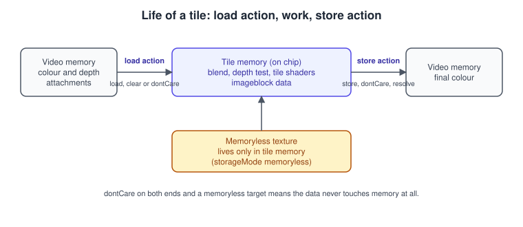
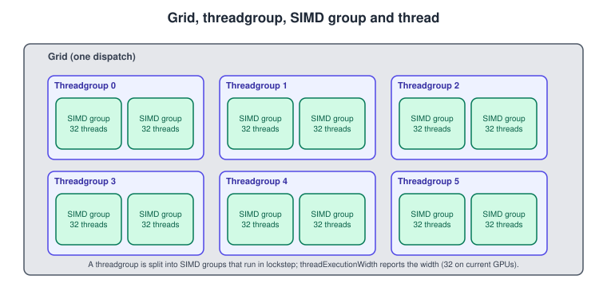

GPU Architecture and TBDR
|
This content was generated with the assistance of AI and should be verified against the official documentation before being relied on in production. |
Most rules of thumb in graphics were learned on desktop GPUs, and some of them are wrong on an iPhone, an iPad, a Mac with Apple silicon or Apple Vision Pro. Apple GPUs share memory with the CPU, split every render pass into small tiles that they shade out of on-chip memory, and run their threads in SIMD groups of a fixed width. Knowing this makes the Metal API read as a list of consequences instead of a list of rules: why a depth buffer can cost no memory at all, why a load action is a performance setting, why a buffer can be shared without a copy. This page explains the hardware model, shows it in code, and says which older advice has expired.
The facts were checked in November 2026 and apply to Metal 4 on the 26 OSes and the 27 OSes (Xcode 27); the hardware model is the same for Metal 3. The general ideas (what a GPU is, why it is parallel, what memory it has) are in GPU Architecture Basics and the rendering stages in The Rendering Pipeline; this page is the Apple version. The Metal Bookshelf, the running example of this section, uses the knowledge here in its render passes (Render Passes and Load/Store Actions) and in its tile-based lighting (Deferred and Tile Shading). At this point it is only a triangle plus the device query in this page.
Unified memory

On Apple silicon the CPU and the GPU are in the same chip and read the same physical memory (device.hasUnifiedMemory is true). A
buffer the CPU writes is visible to the GPU without a copy, which changes how resources are created:
| Storage mode | Who can touch it | Use for |
|---|---|---|
|
CPU and GPU, one copy in system memory |
Anything the CPU writes every frame: uniforms, particle seeds, dynamic vertex data. The default for buffers. |
|
GPU only |
Static meshes and textures after upload, render targets, anything the CPU never reads. The driver can store it in a GPU-friendly (compressed, tiled) layout. |
|
GPU only, tile memory only, no backing storage |
Depth, stencil and G-buffer attachments that are used inside one render pass and never read afterwards. Available on Apple silicon GPUs. |
|
CPU and GPU with two copies and manual |
Intel Macs only. Deprecated in the 27 OSes: "Managed storage has no effect on Apple Silicon, use Shared storage instead". |
A discrete GPU, on an Intel Mac or on a PC, has its own video memory and every upload is a copy over a bus. Code that assumed this (a staging buffer, then a blit into private memory) still works on Apple silicon but does extra work for textures that are uploaded only once; the page on Resource Loading and Streaming shows when the copy is still the right choice.
Performance notes for unified memory: the CPU and the GPU compete for the same bandwidth, so a CPU that reads a large buffer while the GPU
renders slows both; allocate the memory you need up front and watch device.currentAllocatedSize against device.recommendedMaxWorkingSetSize,
because the working set that the system allows is a fraction of the physical memory.
Source: MTLStorageMode.managed; MTLDevice
Tile-based deferred rendering

The GPUs in Apple silicon implement tile-based deferred rendering (TBDR). The GPU breaks the render destination into a grid of small regions, called tiles. It processes each tile with one of its cores, often many at once, and it defers the rendering phase for each tile until it has evaluated all the geometry that touches that tile. Compare it with an immediate-mode (IM) GPU, which fully processes a primitive, visible or not, as soon as it arrives.
The steps of a render pass on a TBDR GPU:
-
Vertex processing and tiling. The vertex function runs for all the draws of the pass, and the results are sorted into the tiles each triangle covers.
-
Per tile, hidden surface removal. The GPU resolves visibility for the tile: primitives that are occluded are discarded before any fragment is shaded. For opaque geometry each pixel is shaded about once, whatever the draw order.
-
Fragment shading into tile memory. The remaining fragments run the fragment function and write into tile memory, fast temporary storage that sits on the GPU. It has far more bandwidth and far lower latency than device memory, and uses much less energy.
-
Store. When the tile is finished, the result is written to device memory, as the store action of the attachment says.
The GPU can also start the vertex stage of a later render pass while it finishes the fragment stage of the current one, because the two stages use different hardware blocks.
Consequences for the code you write:
-
Overdraw of opaque triangles is cheap. Sorting opaque geometry front to back, a standard trick on IM GPUs, matters much less here. Alpha-tested geometry (shaders that
discard_fragment()or write depth) reduces the benefit, because visibility can no longer be decided before the shader runs; draw it after the opaque geometry. -
The cost of a render pass is its memory traffic. Everything that crosses tile memory and device memory is paid for at the start (load actions) and at the end (store actions) of the pass.
-
Splitting a pass has a price. Every render pass boundary writes tiles out and reads them back. Merge passes that can share attachments; this is the reason Metal offers imageblocks and tile shaders.
-
Blending is cheap on tiles. The read-modify-write of blending happens in tile memory.
Load and store actions

Every attachment of a render pass has a load action (what is in the tile at the start) and a store action (what happens to it at the end):
| Action | Meaning | When to use |
|---|---|---|
Load: |
Fill the tile with the clear value. No read from memory. |
The first pass of every frame, for colour and depth. |
Load: |
Read the previous contents from device memory. |
Only when the pass really continues earlier work (a second pass over the same target). |
Load: |
The tile starts undefined. |
When every pixel will be overwritten, for example a full-screen pass. |
Store: |
Write the tile to device memory. |
Colour that is presented or read later. |
Store: |
Discard the tile. |
Depth, stencil and G-buffers that are not needed after the pass. |
Store: |
Resolve the multisample colour into the resolve texture; the samples themselves are not written to memory. |
MSAA: keep the 4x samples in tile memory only and store just the resolved colour. |
A .memoryless texture is the extreme case of a don’t-care store: it has no backing memory at all and can be used as an attachment only
within one pass. A memoryless texture cannot use the .load and .store actions (Apple’s reference says so); with .clear (or .dontCare) on load and .dontCare on store, a depth buffer costs neither memory nor bandwidth. The full treatment of passes is
in Render Passes and Load/Store Actions.
The Metal 4 render command encoder removes MTLStoreActionOptions, which does not apply to Apple silicon GPUs; the actions themselves remain
on the attachment descriptors.
Imageblocks, tile shaders and raster order groups
Starting with the A11 generation, Apple GPUs expose the tile to the shading code, which makes several techniques much cheaper:
-
Imageblocks are tiles of structured image data in local memory. Each pixel can have several components (for example albedo, specular and normal as three image slices), the data persists for the lifetime of the tile across draws and dispatches, and it is available to both fragment and compute functions. Your existing attachments create imageblocks that match their formats, and you can define your own inside a shader.
-
Tile shaders are compute or fragment functions that run as part of a render pass and can read and write tile memory. They let one render pass contain draw, compute and draw again, with the intermediate data never going to device memory.
-
Raster order groups order the memory accesses of fragments that hit the same pixel, to build order-independent transparency, custom blending and voxelisation. Multiple groups let non-conflicting accesses run in parallel.
-
Programmable blending and per-sample control, including custom MSAA resolve in a tile shader.
Deferred shading is the classic example: a G-buffer pass writes albedo, normal and depth to device memory, and a lighting pass reads them back, which is bandwidth-heavy. With imageblocks and tile shading both phases fit in one pass and the G-buffer stays in tile memory. The code is in Deferred and Tile Shading.
A bandwidth-friendly render pass
The code below builds a pass descriptor whose depth buffer is memoryless and whose colour is stored once. It is the Metal 3 style of
describing a pass, which Metal 4 keeps in the same shape (MTL4RenderPassDescriptor) for the attachments.
import Metal
func makeDepthTexture(device: MTLDevice, width: Int, height: Int) -> MTLTexture? {
let desc = MTLTextureDescriptor.texture2DDescriptor(pixelFormat: .depth32Float,
width: width, height: height,
mipmapped: false)
desc.usage = .renderTarget
// A depth buffer used only inside this pass never needs backing memory.
#if targetEnvironment(simulator)
desc.storageMode = .private // the Simulator needs private depth textures
#else
desc.storageMode = device.hasUnifiedMemory ? .memoryless : .private
#endif
return device.makeTexture(descriptor: desc)
}
func makePassDescriptor(color: MTLTexture, depth: MTLTexture) -> MTLRenderPassDescriptor {
let pass = MTLRenderPassDescriptor()
pass.colorAttachments[0].texture = color
pass.colorAttachments[0].loadAction = .clear // no read from memory
pass.colorAttachments[0].clearColor = MTLClearColor(red: 0.08, green: 0.07, blue: 0.10, alpha: 1)
pass.colorAttachments[0].storeAction = .store // presented later
pass.depthAttachment.texture = depth
pass.depthAttachment.loadAction = .clear
pass.depthAttachment.clearDepth = 1.0
pass.depthAttachment.storeAction = .dontCare // never read after the pass
return pass
}A caution on the storage mode: memoryless is available only on Apple family GPUs, which is why the code asks hasUnifiedMemory, and in the Simulator
depth, stencil and multisample textures must use private storage (see Setup: Xcode and the Project). A
memoryless texture cannot be sampled or read by a later pass.
Threads: SIMD groups and threadgroups

Compute work, and the fragment and vertex work too, is executed by many threads. Metal exposes three levels:
-
A thread is one invocation of a function.
-
A SIMD group (a warp or wavefront on other GPUs) is a set of threads that execute the same instruction together. On current Apple GPUs it has 32 threads;
MTLComputePipelineState.threadExecutionWidthreturns the width, and you should read it instead of hard-coding 32. Threads in a SIMD group can exchange data and reduce values without memory, with the functions of the MSL SIMD-group family such assimd_sum,simd_shuffleandsimd_broadcast. -
A threadgroup is a set of SIMD groups that run on one core and share fast
threadgroupmemory and can synchronise withthreadgroup_barrier. Its size is limited bymaxTotalThreadsPerThreadgroupon the pipeline state, which depends on how many registers the function uses.
Divergence has a cost: when threads of one SIMD group take different branches, the group executes both paths with some threads masked off. Keep branches uniform in a SIMD group where you can (branch on a value that is the same for 32 neighbouring threads), and do not assume lockstep for correctness; use the barrier or the SIMD function.
The compute side is covered in depth in Compute Kernels. The example below shows the level structure with a reduction that sums values with one SIMD function per group and one atomic per group.
#include <metal_stdlib>
using namespace metal;
kernel void sum_values(device const float* input [[buffer(0)]],
device atomic_uint* result [[buffer(1)]],
constant uint& count [[buffer(2)]],
uint gid [[thread_position_in_grid]],
uint lane [[thread_index_in_simdgroup]]) {
float v = (gid < count) ? input[gid] : 0.0;
float groupSum = simd_sum(v); // one reduction per SIMD group, no memory traffic
if (lane == 0) {
// Fixed-point accumulation so integer atomics can be used.
atomic_fetch_add_explicit(result, uint(groupSum * 1024.0), memory_order_relaxed);
}
}import Metal
func dispatchSum(device: MTLDevice, queue: MTLCommandQueue, input: MTLBuffer, count: Int) throws -> Float {
guard let library = device.makeDefaultLibrary(),
let function = library.makeFunction(name: "sum_values") else { fatalError("missing function") }
let pipeline = try device.makeComputePipelineState(function: function)
print("SIMD width:", pipeline.threadExecutionWidth,
"max threads per group:", pipeline.maxTotalThreadsPerThreadgroup)
let result = device.makeBuffer(length: MemoryLayout<UInt32>.stride, options: .storageModeShared)!
result.contents().storeBytes(of: 0, as: UInt32.self)
var n = UInt32(count)
let commandBuffer = queue.makeCommandBuffer()!
let encoder = commandBuffer.makeComputeCommandEncoder()!
encoder.setComputePipelineState(pipeline)
encoder.setBuffer(input, offset: 0, index: 0)
encoder.setBuffer(result, offset: 0, index: 1)
encoder.setBytes(&n, length: MemoryLayout<UInt32>.size, index: 2)
let width = pipeline.threadExecutionWidth
encoder.dispatchThreads(MTLSize(width: count, height: 1, depth: 1),
threadsPerThreadgroup: MTLSize(width: width * 4, height: 1, depth: 1))
encoder.endEncoding()
commandBuffer.commit()
commandBuffer.waitUntilCompleted()
return Float(result.contents().load(as: UInt32.self)) / 1024.0
}This sample uses the Metal 3 queue for brevity, as the Metal 3 path of the Bookshelf does; the Metal 4 form is in the compute page. The values above are examples: the maximum threadgroup size depends on the device and the function, and the Feature Set Tables list the limits.
GPU families and supportsFamily
Apple GPUs are grouped in families, and each family is a feature level. Ask the device, never the model name:
| Family | GPUs | Notable additions |
|---|---|---|
|
A14, M1 |
The oldest family that can run Metal 4. |
|
A15, A16, M2 |
Larger limits and more features per generation. |
|
A17 Pro, M3, M4 |
Hardware ray tracing (see the Ray Tracing page). |
|
Newer chips |
Check the Feature Set Tables for what each adds. |
|
Any GPU that supports the API generation |
Use these to choose the API path. |
The older common1 to common3, mac1, mac2 and Mac Catalyst families are deprecated, and the deprecated MTLFeatureSet enumeration has been replaced
by supportsFamily(_:) since iOS 16 and macOS 13. The next program prints the facts that decide a path.
import Metal
func describe(_ device: MTLDevice) {
print("Name:", device.name)
print("Unified memory:", device.hasUnifiedMemory)
print("Low power:", device.isLowPower)
print("Recommended working set (MB):", device.recommendedMaxWorkingSetSize / 1_048_576)
print("Max threadgroup size:", device.maxThreadsPerThreadgroup)
let families: [(String, MTLGPUFamily)] = [
("apple7", .apple7), ("apple8", .apple8), ("apple9", .apple9),
("metal3", .metal3), ("metal4", .metal4)
]
for (name, family) in families {
print(name.padding(toLength: 8, withPad: " ", startingAt: 0), device.supportsFamily(family))
}
print("Ray tracing:", device.supportsRaytracing)
}
if let device = MTLCreateSystemDefaultDevice() { describe(device) }Source: MTLGPUFamily; MTLDevice
Performance rules that follow from the architecture
-
Clear instead of load, and don’t-care instead of store wherever the data is not needed. Each avoided load or store is a full-attachment transfer per frame.
-
Prefer fewer render passes. Merge passes that share attachments, and use memoryless attachments and tile shaders for what cannot be merged.
-
Draw opaque before alpha-tested and blended geometry. Hidden surface removal then does its job.
-
Use
.sharedfor per-frame CPU data and.privatefor static GPU data. Do not use managed storage on new code. -
Think in SIMD groups. Keep divergence low, use the SIMD functions instead of threadgroup memory where a reduction stays within 32 threads.
-
Profile on a device. Bandwidth and tile behaviour are not reproduced by the Simulator.
The whole list, with measurements, is the subject of Performance Best Practices.
Where the books are outdated
| Statement | Today |
|---|---|
Metal Programming Guide (CLA) chapter 15: threadgroups are limited to 512 threads on iOS |
1,024 threads on A11 and later; the limit also depends on the function’s resource use, so read |
MBT chapters 14 and 15 teach tile-based deferred rendering with Metal 3 calls |
The hardware model is unchanged. In Metal 4, render passes use |
MBT "What you need": every Mac since 2012 runs Metal |
Metal 4 needs an A14 or an M1; managed storage, |
CLA (overall): an A7 baseline and |
Query |